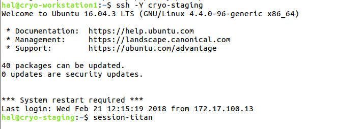
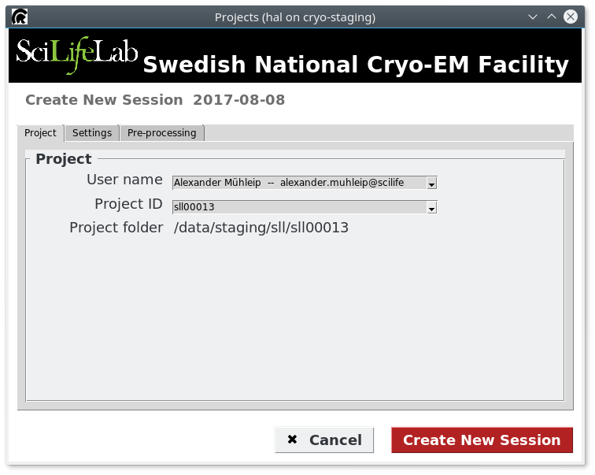
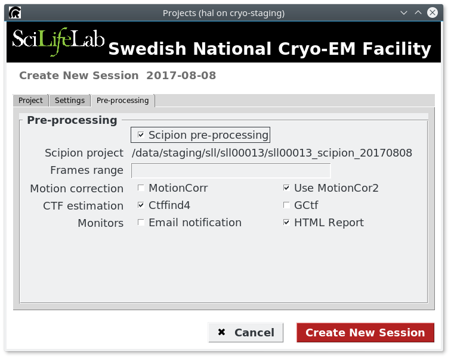

Session Setup¶
As part of the computational infrastructure of the SciLifeLab Cryo-EM Facility, we have implemented a simple tracking system for each microscope session. It is COMPULSORY that all users go through the provided Session-Wizard, regardless of whether one plans to use Scipion for streaming processing or not. This wizard will do for you:
Create the required folders to store acquired images
Create the text file required by Stefan (maybe removed in the future)
Setup the Scipion project if using the streaming processing.
Launch the wizard from the command line¶
From the Linux cryo-workstation (either 1 or 2) by the microscope, open a terminal window to connect to the cryo-staging machine by typing: ssh -Y cryo-staging. After that, you need to execute the command to start the session: session-titan (or session-talos depending on your booking). The following screenshot shows the terminal windows and both commands:
After typing the session command, it should appears a GUI where it is possible to setup the parameters as explained in the next section.
Setup the parameters in the Session-Wizard GUI¶
The first tab should already grab the information of the user that is assigned to that day (the information is taken from the Booking System). In case that it is not correct, you can change to another user. The Facility operators could also select a given CEM000XX project. In the second tab (see figure below) you can choose if you want to use Scipion streaming processing or not. If yes, you can quickly select some protocols to be used.
Copy raw data to your project folder¶
K2 Camera¶
If you are using the K2 camera on the Titan, you will need to go to the Gatan computer to execute a script to copy your movies to your project folder. This procedure is documented in point 29 of the [K2 Instruction Document](https://www.dropbox.com/sh/rtss2c5qblmurmf/AABqRvU3X9eIrM7wiR3a9Jg1a?dl=0&preview=Using_the_K2_Titan_Krios.pdf)
Falcon 3¶
If you are using the Falcon 3, first you need to select the folder name in EPU for storing the images. We recommend to follow the convention of project code + ‘_epu’ (e.g, dbb00072_epu, sll00069_epu, etc). Then the raw data can be found in /mnt/krios-falcon3 (or /mnt/talos-falcon3). You can use the command copy-falcon3-data (using rsync internally) to copy the data to your project folder as in the example shown below (change to your own data folder):
$ copy-falcon3-data /mnt/talos-falcon3/dbb00073_20180126_EPU
The following lines are the output from the command (no need to be executed by the user)
$ Output folder: /data/staging/dbb/dbb00073/f3_frames
$ rsync -avuP /mnt/talos-falcon3/dbb00073_20180126_EPU/ /data/staging/dbb/dbb00073/f3_frames/
$ rsync -avuP /mnt/talos-falcon3/dbb00073_20180126_EPU/ /data/staging/dbb/dbb00073/f3_frames/
Next Steps¶
Check the Scipion pre-processing HERE (FIXME)